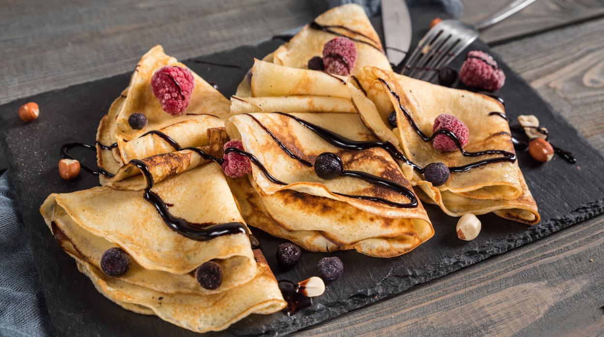

Menu saludabre: nuestro menu consta de 3 platos los cuales son:
Primer plato: Rollitos de espinacas con queso vegano
Segundo plato: Ternera con ensalada de pasta
Postre: Crepes de zanahoria rellenos sin azúcar
